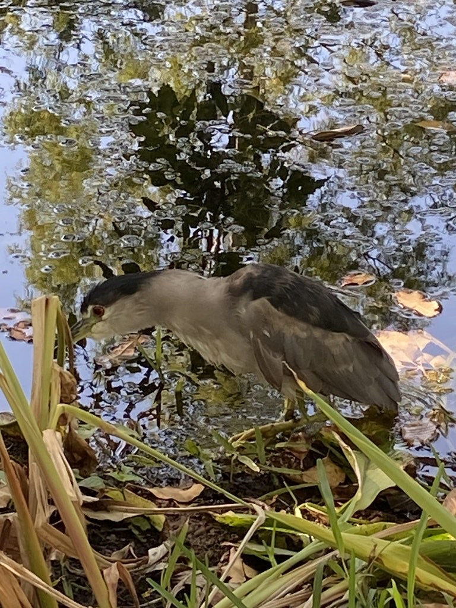

- A stocky, hunch-shouldered heron with a black cap and back, pale gray wings, and startling red eyes is a black-crowned night heron.
- It works the late shift. While other herons fish by day, this one feeds mostly at dusk and after dark, sidestepping the competition.
- The squat, motionless posture is a hunting strategy — it stands frozen at the water's edge and waits, then strikes fast at whatever swims past.
- Young birds look like a different species entirely: streaky brown and white, with none of the adult's clean black-and-gray.
Black crown and back, pale gray wings, white underparts, red eyes, and short yellow legs.
Stocky and short-necked, with a hunched look.
Brown, heavily streaked and spotted with white, with orange-yellow eyes.
A couple of long, thin white head plumes in breeding adults.
Usually quiet. Best known for a harsh, barking "quok" given in flight, often heard at dusk as birds head out to feed.
A short, thickset heron sitting hunched and still at the water's edge, especially near dusk. The black cap and back over gray wings mark an adult; a streaky brown version is a young bird, not a separate species.
Fish, frogs, crayfish, aquatic insects, and small animals, plus the occasional egg or nestling — caught mostly at dusk and through the night.
Around the pond margins, often tucked into waterside shrubs or standing hunched at the edge near dawn and dusk. Look low and still rather than out in the open.
Year-round resident, but easiest to see in the low light of early morning and evening when it comes out to feed.
Watch from a distance and please do not feed it or any park wildlife. A roosting bird is resting before its night shift — give it space.
- © Pammy63 (CC-BY-NC), via iNaturalist